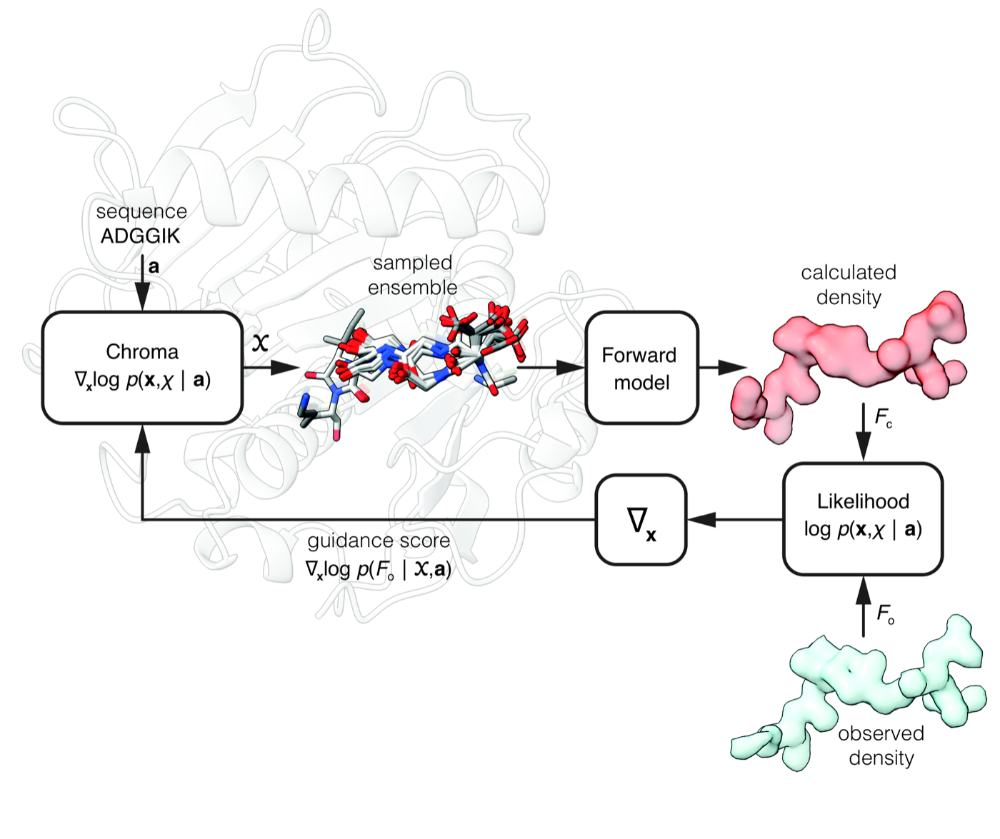
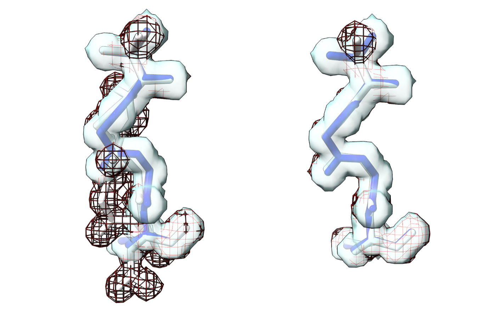

Generative modeling of protein ensembles guided by crystallographic electron densities
* Equal contribution.
- Problem
- Sample an ensemble of protein structures whose average density explains a measured crystallographic map.
- Prior
- Chroma, a pretrained score-based diffusion model, with a differentiable side-chain packer.
- Method
- Non-i.i.d. score guidance through a differentiable density forward model, then matching-pursuit filtering.
- Evaluated on
- High-resolution crystal structures with well-separated altlocs. Target regions of 3–11 residues, with the rest of the protein held fixed.
- Main caveat
- Fit is measured on the same density used for guidance.
- My contribution
- I implemented the forward model that turns a protein structure into an electron density map.
Demos marked Illustration are small simulations of the idea and do not run our models. Results from the work itself are in the figures marked From our paper and in the charts and tables.
1. The problem: a crystal is not one structure
X-ray crystallography is one of the most accurate ways to determine a protein's structure. A crystal is an enormous array of molecules, and they are not all identical. The measurement captures the variation between them.
Standard practice mostly compresses that information into one model plus a per-atom uncertainty (the B-factor). Where two distinct arrangements are clearly visible, crystallographers can model them as alternate locations, or altlocs. Backbone altlocs remain under-recognized, partly because common software ignores them or resolves them with simple rules. Prior work also showed that structure-ensemble predictors can fail to reproduce these conformations, or even their two-peaked distribution.
2. Setup: a generative prior and a differentiable forward model
We treat ensemble fitting as an inverse problem. The general formulation is explained on the Experiment-guided AlphaFold page. Here, the two ingredients are:
- Prior. Chroma, a pretrained score-based diffusion model over backbones, with a differentiable side-chain packer for the atoms that carry much of the density.
- Likelihood. A forward model places a Gaussian-like density on each atom, using tabulated form factors and the crystal's symmetry. A Gaussian noise model then compares the observed map with the average density of the ensemble.

3. The key idea: guide the ensemble jointly
In standard guidance, each sample is pushed toward the data on its own. Here that is the wrong objective. If every sample tries to explain the whole density alone, nothing encourages them to divide the work.
Because our likelihood depends on the ensemble average, its gradient couples the samples. If one state is already over-represented, the residual there turns negative and pushes members away, while an unexplained region pulls them in. We call this non-i.i.d. guidance:
dX = −[½X + PP⊤(∇X log pt(X) + η ∇X log p(Fo | X, χ(X), a))] βt dt + √βt P dn
Try it: independent versus joint guidance Illustration
Ten ensemble members start mostly near the left state. The measured density also has a second state on the right. As in a diffusion sampler, the fit starts coarse and sharpens over time. With independent guidance, every member is drawn to the strongest state and the second one is lost. With joint guidance, members share the work of explaining the density, so some move to the second state.
4. Results
We focused on high-resolution crystal structures (about 2.5 Å or better, with 4OLE at 2.52 Å) containing well-separated altlocs. To keep the problem well-posed, atoms outside the target region were held at their known positions. We compared guided and unguided sampling on two questions: does the ensemble fit the density, and does it find both known conformations? In each case we sampled 16 structures and kept at most 5 with matching pursuit.
Does joint guidance matter? This is the paper's central claim, so we ablated it by guiding the same targets with and without the coupling between samples. The ablation covers 3 of the 13 proteins in the study.
| Protein | Independent (i.i.d.) | Joint (non-i.i.d.) |
|---|---|---|
| 2O1A | 0.7459 | 0.7903 |
| 3OHE | 0.8369 | 0.8416 |
| 7EC8 | 0.8585 | 0.8903 |
From our paper. Cosine similarity with the observed density; higher is better. Joint guidance wins on all three, by a margin that ranges from 0.005 to 0.044.

Guided sampling consistently produced two- or multi-peaked distributions close to both modeled altlocs, while unguided samples often failed to represent that structure. As a control, we also tested two regions of 7EC8 chain B that were deposited with a single conformation. Guidance improved their cosine similarity from 0.789 to 0.924 and from 0.781 to 0.932.

5. How to read these results
- Fit is measured on the guidance target. Cosine similarity uses the same map that guided sampling, so a gain over unguided sampling is expected. We did not hold out data in this workshop paper.
- Filtering applies to both arms. Guided and unguided batches each draw 16 samples and keep at most 5 by density fit, so the comparison is like for like.
- Altloc recovery is the more meaningful test. A good density fit does not by itself imply correct conformations. The bimodality analysis checks that samples land near both deposited altlocs, although those models were also built from the same density.
- Showcased regions. The three regions in the figure are illustrative. The paper's appendix covers the full set of proteins.
6. Limitations
- Local regions. Chroma's backbone sampler is not sequence-conditioned, so we constrained the atoms outside each target region.
- A simple B-factor. We used one uniform value, the average over the structure. Optimizing it during sampling is future work.
- Side-chain packing and larger proteins remain open directions.
Takeaways
- Match the sampling to the measurement. If data describe a population, the guidance should act on a population.
- A shared likelihood creates useful coordination between samples with no explicit diversity term and no change to the prior network.
Glossary
Show the glossary
- Electron density: a 3D map of where electrons are, reconstructed from X-ray diffraction.
- Altloc: an alternate modeled position for atoms in a crystal structure.
- Backbone: the repeating chain of atoms shared by all amino acids.
- B-factor: a per-atom value describing how spread out its density is.
- Non-i.i.d. guidance: guidance in which the update for each sample depends on the others.
- Matching pursuit: a greedy method that selects items one by one to best fit a target.
Where it led
This paper established joint guidance on real crystallographic data. Experiment-guided AlphaFold carries the idea to a sequence-conditioned all-atom prior and to NMR and cryo-EM. Seek and You Shall Fold then asks what to do when the measurement has no gradient.
Citation
BibTeX
@inproceedings{maddipatla2024generative,
title = {Generative modeling of protein ensembles guided by
crystallographic electron densities},
author = {Maddipatla, Sai Advaith and Sellam, Nadav Bojan and Vedula, Sanketh and
Marx, Ailie and Bronstein, Alex},
booktitle = {NeurIPS 2024 Workshop on Machine Learning for Structural Biology},
year = {2024},
eprint = {2412.13223},
archivePrefix = {arXiv}
}